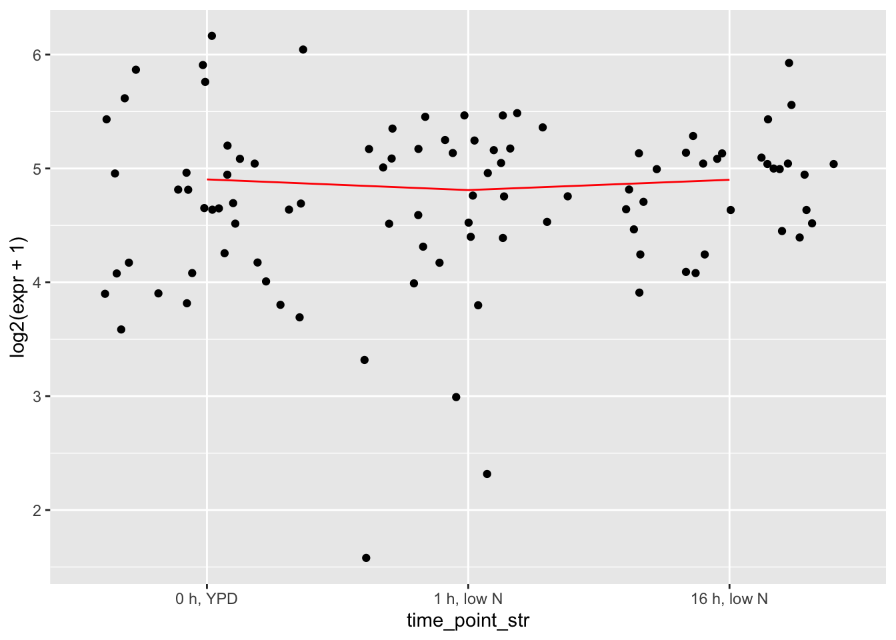

Data for analysis scripts
Additional data cleaning for heiarchical clustering and generalized linear models
source("functions_for_figure_scripts.R")
sapply(c("dplyr", "purrr", "tidyr", "ggpubr", "readr",
"data.table", "ggplot2", "data.table",
"matrixStats"), require, character.only=TRUE)## dplyr purrr tidyr ggpubr readr data.table ggplot2
## TRUE TRUE TRUE TRUE TRUE TRUE TRUE
## data.table matrixStats
## TRUE TRUE### Reading in Count Data
load("data_files/Cleaned_Count_Data.RData")
load("data_files/Cleaned_Count_Data_AlleleSpecific.RData")Filtering out lowly expressed genes
Filtering out genes that have lower than 30 counts per million average expression in Scer, Spar, Hyc, and Hyp.
Before we filter, we have previously identified a set of genes with a lot of regulatory targets according to Yeastract regulatory matrices in Scer that get filtered out by the low expression step:
# Yeastract highly connected genes that are unannotated/filtered out for low expression:
MissingHubGenes <- c("YBR240C", "YCL058C", "YCR106W", "YDR123C", "YER109C", "YER111C", "YER184C", "YFL052W", "YGL254W", "YGR288W", "YHR124W", "YJL127C", "YJR094C", "YKL222C", "YLR013W", "YLR176C", "YLR256W", "YLR266C", "YNR063W", "YOL028C", "YOR113W", "YOR380W", "YPL248C", "YPL133C", "YPR196W", "YJL056C")
MissingHubGenes[!(MissingHubGenes %in% rownames(counts))]## [1] "YCL058C" "YER109C" "YLR256W" "YOL028C"# All 4 unannotated genes have different CDS in Scer than other Saccharomyces:
# FYV5 (de novo gene), FLO8 (truncated in Scer s288c),
# HAP1 (ty1 insertion), and YAP7 (indel in Scer)
# changing to non-log2 scale for actual filtering (log2 scale is for visualizing)
MissingHubGenes <- intersect(rownames(counts), MissingHubGenes)
rowMeans(counts[MissingHubGenes,]) # remaining 22 are all lowly expressed (but these averages are across all )## YBR240C YCR106W YDR123C YER111C YER184C YFL052W YGL254W YGR288W YHR124W
## 9.542522 4.302053 22.601173 23.953079 9.134897 24.337243 11.891496 19.392962 8.363636
## YJL127C YJL056C YJR094C YKL222C YLR013W YLR176C YLR266C YNR063W YOR113W
## 4.363636 16.847507 6.879765 14.604106 1.504399 26.695015 18.501466 7.897361 18.296188
## YOR380W YPL248C YPL133C YPR196W
## 21.721408 5.856305 17.073314 16.111437cutoffExpr <- 30
# Criteria: mean expr less than threshold (30 cpm, not log scale) in
# cer, par, hyc, and hyp in all experiments
getGoodExprGeneNames <- function(.organism, .allele, .experiment, .expr_thresh) {
if (.organism != "hyb") {
sample_names <- sample_info |> filter(allele == .allele &
experiment == .experiment) |>
select(sample_name) |> pull()
cts <- counts[, sample_names]
means <- rowMeans(cts)
return(rownames(cts)[means >= .expr_thresh])
}
if (.organism == "hyb") {
sample_names <- sample_info_allele |> filter(allele == .allele &
experiment == .experiment) |>
select(sample_name) |> pull()
cts <- counts_allele[, colnames(counts_allele) %in% sample_names]
means <- rowMeans(cts)
return(rownames(cts)[means >= .expr_thresh])
}
}
# tests for getGoodExprGeneNames
# in Scer
test <- getGoodExprGeneNames(.organism = "cer", .allele = "cer",
.experiment = "HAP4", .expr_thresh = cutoffExpr)
"YPR199C" %in% test # should be## [1] TRUE"YFL051C" %in% test # shouldn't be## [1] FALSEsum(MissingHubGenes %in% test)## [1] 1# in Spar
test <- getGoodExprGeneNames(.organism = "par", .allele = "par",
.experiment = "HAP4", .expr_thresh = cutoffExpr)
"YPR199C" %in% test # shouldn't be## [1] FALSE"YFL051C" %in% test # should be## [1] TRUEsum(MissingHubGenes %in% test)## [1] 3# in Spar Heat
test <- getGoodExprGeneNames(.organism = "par", .allele = "par",
.experiment = "Heat", .expr_thresh = cutoffExpr)
"YOL159C" %in% test # shouldn't be## [1] FALSE# applying to all genes/groups/experiments
griddf <- expand_grid(organism = c("cer", "par", "hyb"),
allele = c("cer", "par"),
experiment = unique(sample_info$experiment))
keep <- map(c(1:nrow(griddf)), \(i) getGoodExprGeneNames(griddf$organism[i],
griddf$allele[i],
griddf$experiment[i],
.expr_thresh = cutoffExpr)) |>
unlist() |> unique()
"YPR199C" %in% keep # should be## [1] TRUE"YFL051C" %in% keep # should be## [1] TRUEsum(MissingHubGenes %in% keep)## [1] 11sum(!(MissingHubGenes %in% keep))## [1] 11length(keep) # number of genes we're keeping## [1] 5045# filtering
counts <- counts[keep,]
counts_allele <- counts_allele[keep,]
sample_info |> select(genotype) |> table() # should be all WT## genotype
## WT
## 341sample_info_allele |> select(genotype) |> table() # should be all WT## genotype
## WT
## 360Taking mean count across replicates (aka collapsing)
For heiarchical clustering, we want the correlation to most directly reflect the expression shape rather than variability between replicates. So for heiarchical clustering analysis, we take the average of all replicates’ expression for each gene in a particular environment/timepoint/organism
# collapsing
collapsed <- collapseReplicates(sample_info, counts)
collapsed_allele <- collapseReplicates(sample_info_allele, counts_allele)
# also filtering sample infos down to single info and
# info_allele with all conditions
info <- sample_info |> select("condition", "experiment",
"time_point_num", "time_point_str") |>
unique() |> arrange(experiment, time_point_num)
info_allele <- sample_info_allele |> select("condition", "experiment",
"time_point_num", "time_point_str") |>
unique() |> arrange(experiment, time_point_num)
# ordering collapsed counts to same order as info
collapsed$cer <- collapsed$cer[,info$condition]
collapsed$par <- collapsed$par[,info$condition]
collapsed_allele$cer <- collapsed_allele$cer[,info_allele$condition]
collapsed_allele$par <- collapsed_allele$par[,info_allele$condition]
cat("pre-collapse\n")## pre-collapsedim(counts[,sample_info$experiment == "LowN" & sample_info$allele == "cer"])## [1] 5045 92sample_info |> filter(experiment == "LowN" & allele == "cer") |>
select(time_point_num) |>
table()## time_point_num
## 0 60 960
## 33 27 32dim(counts[,sample_info$experiment == "HAP4" & sample_info$allele == "par"])## [1] 5045 15sample_info |> filter(experiment == "HAP4" & allele == "par") |>
select(time_point_num) |>
table()## time_point_num
## 0 79.8 124.8 169.8 214.8 259.8 304.8 364.8 424.8 484.8 544.8 604.8 664.8
## 1 1 1 1 1 1 1 1 1 1 1 1 1
## 1390.2 1950
## 1 1cat("post-collapse\n")## post-collapsedim(collapsed$cer[,info$experiment == "LowN"]) # LowN has been reduced (~30 replicates)## [1] 5045 3info |> filter(experiment == "LowN") |> select(time_point_num) |> table()## time_point_num
## 0 60 960
## 1 1 1dim(collapsed$par[,info$experiment == "HAP4"]) # HAP4 has not been reduced (no replicates)## [1] 5045 15info |> filter(experiment == "HAP4") |> select(time_point_num) |> table()## time_point_num
## 0 79.8 124.8 169.8 214.8 259.8 304.8 364.8 424.8 484.8 544.8 604.8 664.8
## 1 1 1 1 1 1 1 1 1 1 1 1 1
## 1390.2 1950
## 1 1### Tests for collapsed/movavg counts
# additional tests for collapsing replicates
# toy count matrix using random sample of genes (to test ability to separate low var genes out)
toy_mat <- counts[, sample_info$organism == "par" & sample_info$experiment == "LowN"]
toydf <- makeDf(toy_mat, sample_info)
# assessing distribution of variance, before collapsing replicates
plotdf0 <- toydf |> group_by(gene_name) |>
summarise(var_expr = var(expr),
mean_expr = mean(expr))
p0 <- ggplot(plotdf0, aes(x = log2(var_expr/mean_expr))) + geom_density() +
geom_vline(xintercept = 0, color = "red") +
ggtitle("before collapsing replicates")
# after collapsing replicates
toy_mat_collapsed <- collapsed$par[, info$experiment == "LowN"]
plotdf1 <- tibble(var_expr = apply(toy_mat_collapsed, 1, var),
mean_expr = apply(toy_mat_collapsed, 1, mean),
gene_name = rownames(toy_mat_collapsed))
p1 <- ggplot(plotdf1, aes(x = log2(var_expr/mean_expr))) + geom_density() +
geom_vline(xintercept = 0, color = "red") +
ggtitle("after collapsing replicates")
ggarrange(p0, p1, nrow = 1, ncol = 2)## Warning: Removed 3 rows containing non-finite outside the scale range (`stat_density()`).
## Removed 3 rows containing non-finite outside the scale range (`stat_density()`).
# mean expression pre and post (shouldn't have changed)
plotdf <- left_join(plotdf0, plotdf1, by = "gene_name", suffix = c("_pre", "_post"))
ggplot(plotdf, aes(x = log2(mean_expr_pre), y = log2(mean_expr_post))) +
geom_point() +
geom_abline(slope = 1, intercept = 0, color = "gold")# difference in var/mean pre and post versus mean expr
plotdf <- select(plotdf, var_expr_pre, var_expr_post, mean_expr_pre, gene_name) |>
dplyr::rename("mean_expr"="mean_expr_pre")
ggplot(plotdf, aes(x = log2(mean_expr + 1),
y = log2(var_expr_pre) - log2(var_expr_post))) +
geom_hex() +
geom_hline(yintercept = 0, color = "gold")## Warning: Removed 3 rows containing non-finite outside the scale range (`stat_binhex()`).# as expected, there is lower variance post collapse (very few genes below y = 0)
# most genes have fairly little difference in var when collapsing replicates,
# but the difference can be extreme for a few genes, of middling expression level
# For genes with a difference, do we trust the collapsed variance to be more accurate to expression shape?
# first random gene that tend to have very little difference in variance
gene_idx <- plotdf |> select(gene_name) |> pull() |> sample(1)
ggplot(filter(toydf, gene_name == gene_idx), aes(x = time_point_str, y = log2(expr + 1))) +
geom_jitter() +
geom_line(data = summarise(group_by(filter(toydf, gene_name == gene_idx), time_point_str, gene_name), mean_expr = mean(expr)),
aes(x = time_point_str, y = log2(mean_expr + 1), group = gene_name),
color = "red")## `summarise()` has grouped output by 'time_point_str'. You can override using the `.groups`
## argument.# second a gene with variance substantially reduced in collapsed form
gene_idx <- plotdf |> filter(log2(var_expr_pre) - log2(var_expr_post) > 7) |> select(gene_name) |> pull() |> sample(1)
ggplot(filter(toydf, gene_name == gene_idx), aes(x = time_point_str, y = log2(expr + 1))) +
geom_jitter() +
geom_line(data = summarise(group_by(filter(toydf, gene_name == gene_idx), time_point_str, gene_name), mean_expr = mean(expr)),
aes(x = time_point_str, y = log2(mean_expr + 1), group = gene_name),
color = "red") # these are genes with very little expression change attributable to timepoint,## `summarise()` has grouped output by 'time_point_str'. You can override using the `.groups`
## argument.
# the exact kind we want to have significantly reduced variance in collapsed countsMoving average of environments without replicates (LowPi and Diauxic Shift)
#### taking moving average of LowPi and HAP4 ####
movavg_LowPi_cer <- getMovingAverage(collapsed$cer[,info$experiment == "LowPi"])
movavg_LowPi_par <- getMovingAverage(collapsed$par[,info$experiment == "LowPi"])
movavg_LowPi_hyc <- getMovingAverage(collapsed_allele$cer[,info_allele$experiment == "LowPi"])
movavg_LowPi_hyp <- getMovingAverage(collapsed_allele$par[,info_allele$experiment == "LowPi"])
movavg_HAP4_cer <- getMovingAverage(collapsed$cer[,info$experiment == "HAP4"])
movavg_HAP4_par <- getMovingAverage(collapsed$par[,info$experiment == "HAP4"])
movavg_HAP4_hyc <- getMovingAverage(collapsed_allele$cer[,info_allele$experiment == "HAP4"])
movavg_HAP4_hyp <- getMovingAverage(collapsed_allele$par[,info_allele$experiment == "HAP4"])
# adding moving average counts to counts
# cer
collapsed$cer[, c(colnames(movavg_HAP4_cer),
colnames(movavg_LowPi_cer))] <- cbind(movavg_HAP4_cer,
movavg_LowPi_cer)
# par
collapsed$par[, c(colnames(movavg_HAP4_par),
colnames(movavg_LowPi_par))] <- cbind(movavg_HAP4_par,
movavg_LowPi_par)
# hyc
collapsed_allele$cer[, c(colnames(movavg_HAP4_hyc),
colnames(movavg_LowPi_hyc))] <- cbind(movavg_HAP4_hyc,
movavg_LowPi_hyc)
# hyp
collapsed_allele$par[, c(colnames(movavg_HAP4_hyp),
colnames(movavg_LowPi_hyp))] <- cbind(movavg_HAP4_hyp,
movavg_LowPi_hyp)Comparing collapsed and replicated expression
# tests for getMovingAverage
# plotting before and after moving average
gene_idx <- sample(rownames(counts), 1)
# change to try different experiments (you have to keep the same experiment/allele/species):
test_counts <- collapseReplicates(sample_info, counts)
test_collapsed <- test_counts$cer[,info$condition]
test_movavg <- collapsed$cer
test_info <- info
test_experiment <- "LowPi"
plotdf <- tibble(expr = test_collapsed[gene_idx, test_info$experiment == test_experiment],
condition = colnames(test_collapsed[, test_info$experiment == test_experiment])) |>
left_join(test_info, by = "condition")
#ggplot(plotdf, aes(x = time_point_num, y = expr)) + geom_line()
# same random gene after moving average
plotdf2 <- tibble(expr = test_movavg[gene_idx, info$experiment == test_experiment],
status = "after moving average",
condition = colnames(test_movavg[,info$experiment == test_experiment])) |>
left_join(test_info, by = "condition")
plotdf$status <- "before moving average"
plotdf <- bind_rows(plotdf, plotdf2)
ggplot(plotdf, aes(x = time_point_num, y = expr)) +
geom_line(aes(group = status, color = status))# checking conditions order still matches info
sum(colnames(collapsed$cer) == info$condition)/nrow(info)## [1] 1sum(colnames(collapsed$par) == info$condition)/nrow(info)## [1] 1sum(colnames(collapsed_allele$cer) == info_allele$condition)/nrow(info_allele)## [1] 1sum(colnames(collapsed_allele$par) == info_allele$condition)/nrow(info_allele)## [1] 1# done with data wrangling, cleaning up extra variables
rm(movavg_LowPi_cer,
movavg_LowPi_par,
movavg_LowPi_hyc,
movavg_LowPi_hyp,
movavg_HAP4_cer,
movavg_HAP4_par,
movavg_HAP4_hyc,
movavg_HAP4_hyp,
plotdf, plotdf2,
test_collapsed,
test_info, test_movavg)# saving
save(counts, sample_info, collapsed, info,
file = "data_files/Cleaned_Counts.RData")
save(counts_allele, sample_info_allele, collapsed_allele, info_allele,
file = "data_files/Cleaned_Counts_Allele.RData")Data for Generalized Linear Models
Using the cleaned counts, we now create data structures for heiarchical clustering and for generalized linear modeling. Both need lists of counts data with a separate entry for each experiment. Both need pre-filtering of genes that are lowly expressed in both species in that environment. But the GLM data needs to include replicates while the heiarchical clustering used collapsed counts, averaged among replicates or moving average if there are not replicates.
### Data for single gene GLMs
load("data_files/Cleaned_Counts.RData")
load("data_files/Cleaned_Counts_Allele.RData")
# not using collapsed counts (replicates are vital for the glm)
rm(collapsed, info, collapsed_allele, info_allele)
# combining two species' counts for each experiment into the same dataset
# filtering down to conditions/replicates (ex. LowN_TP1_rep2) where both species have data
ExperimentNames <- c("LowN", "CC", "HAP4", "LowPi", "Heat", "Cold")
spcts <- vector(mode = "list", length = length(ExperimentNames))
names(spcts) <- ExperimentNames
spinfo <- vector(mode = "list", length = length(ExperimentNames))
names(spinfo) <- ExperimentNames
alcts <- vector(mode = "list", length = length(ExperimentNames))
names(alcts) <- ExperimentNames
alinfo <- vector(mode = "list", length = length(ExperimentNames))
names(alinfo) <- ExperimentNames
for(e in ExperimentNames) {
cer_cts <- counts[, sample_info$experiment == e &
sample_info$allele == "cer"]
par_cts <- counts[, sample_info$experiment == e &
sample_info$allele == "par"]
hyc_cts <- counts_allele[, sample_info_allele$experiment == e &
sample_info_allele$allele == "cer"]
hyp_cts <- counts_allele[, sample_info_allele$experiment == e &
sample_info_allele$allele == "par"]
cer_info <- sample_info[sample_info$experiment == e &
sample_info$organism == "cer",]
par_info <- sample_info[sample_info$experiment == e &
sample_info$organism == "par",]
hyc_info <- sample_info_allele[sample_info_allele$experiment == e &
sample_info_allele$allele == "cer",]
hyp_info <- sample_info_allele[sample_info_allele$experiment == e &
sample_info_allele$allele == "par",]
# combining
spcts[[e]] <- cbind(cer_cts, par_cts)
spinfo[[e]] <- bind_rows(cer_info, par_info)
alcts[[e]] <- cbind(hyc_cts, hyp_cts)
alinfo[[e]] <- bind_rows(hyc_info, hyp_info)
cat("number of times each condition is represented in", e, ":",
names(table(table(spinfo[[e]]$condition))), "\n") # number of replicates*2 species in each environment (LowPi and HAP4 don't have replicates). Some timepoints may have different numbers of replicates and therefore there may be more than one number
}## number of times each condition is represented in LowN : 61 63 67
## number of times each condition is represented in CC : 4
## number of times each condition is represented in HAP4 : 2
## number of times each condition is represented in LowPi : 2 3
## number of times each condition is represented in Heat : 3 4
## number of times each condition is represented in Cold : 3 4# factorize genotype, experiment, and time_point_str (no specific reference level for the last two)
spinfo <- lapply(spinfo, mutate, genotype = as.factor(genotype) %>% relevel(ref = "WT"))
alinfo <- lapply(alinfo, mutate, genotype = as.factor(genotype) %>% relevel(ref = "WT"))
# releveling time_point_str is a tad more tricky b/c the reference is named differently in each experiment (and isn't 0 in LowPi)
spinfo <- lapply(spinfo, mutate, time_point_str = as.factor(time_point_str) %>% relevel(ref = time_point_str[which.min(parse_number(time_point_str))]))
spinfo <- lapply(spinfo, mutate, allele = as.factor(allele) %>% relevel(ref = "par")) # we always do cer/par for expression ratios, so we want a big estimate to also mean cer is more strongly expressed
alinfo <- lapply(alinfo, mutate, time_point_str = as.factor(time_point_str) %>% relevel(ref = time_point_str[which.min(parse_number(time_point_str))]))
alinfo <- lapply(alinfo, mutate, allele = as.factor(allele) %>% relevel(ref = "par"))
# removing genes that are lowly expressed in both parental species
expr_thresh <- 30
for(e in ExperimentNames) {
spcts[[e]] <- spcts[[e]][apply(spcts[[e]], 1, \(x) !all(is.na(x))),]
alcts[[e]] <- alcts[[e]][apply(alcts[[e]], 1, \(x) !all(is.na(x))),]
good_idxs <- rowMeans(spcts[[e]]) > expr_thresh
spcts[[e]] <- spcts[[e]][good_idxs,]
alcts[[e]] <- alcts[[e]][good_idxs,]
}
# now datasets from different environments have different nGenes
dim(spcts$LowN)## [1] 4412 191dim(alcts$LowN)## [1] 4412 210dim(spcts$HAP4)## [1] 4290 30dim(alcts$HAP4)## [1] 4290 30dim(spcts$Cold)## [1] 4052 15dim(alcts$Cold)## [1] 4052 16# saving
save(spcts, spinfo, alcts, alinfo, file = "data_files/GLM_Counts.RData")Data for Heiarchical Clustering
load("data_files/Cleaned_Counts.RData")
load("data_files/Cleaned_Counts_Allele.RData")
ExperimentNames <- c("LowN", "CC", "HAP4", "LowPi", "Heat", "Cold")
# parents only for clustering
# using info and collapsed counts from parents only, all WT samples, replicates averaged
dim(info)## [1] 62 4dim(collapsed$cer)## [1] 5045 62dim(collapsed$par)## [1] 5045 62sum(grepl("WT", info$condition))/nrow(info) # should have all WT, ratio is 1## [1] 1sum(grepl("WT", colnames(collapsed$cer)))/ncol(collapsed$cer) # should have all WT, ratio is 1## [1] 1table(colnames(collapsed$cer)) |> table() # should all have one entry, 1 for each condition##
## 1
## 62### Splitting counts into species/experiments
counts_list <- vector(mode = "list", length = 0)
for (e in unique(info$experiment)) {
for (a in c("cer", "par")) {
cts <- collapsed[[a]][, info$experiment == e]
cts <- cts[apply(cts, 1, \(x) !all(is.na(x))),] # removing na genes from Heat/Cold
counts_list[[paste(a, e, sep = "_")]] <- cts
}
}
rm(cts)
# removing genes that are lowly expressed in BOTH species
expr_thresh <- 30
for (e in ExperimentNames) {
cer_name <- paste("cer", e, sep = "_")
par_name <- paste("par", e, sep = "_")
low_cer <- rowMeans(counts_list[[cer_name]]) <= expr_thresh
low_par <- rowMeans(counts_list[[par_name]]) <= expr_thresh
good_idxs <- !(low_cer & low_par)
counts_list[[cer_name]] <- counts_list[[cer_name]][good_idxs,]
counts_list[[par_name]] <- counts_list[[par_name]][good_idxs,]
}
# now experiments have different nGenes (but species from the same experiment will have the same nGenes)
dim(counts_list$cer_CC)## [1] 4240 8dim(counts_list$par_CC)## [1] 4240 8dim(counts_list$cer_Cold)## [1] 4260 4dim(counts_list$par_Cold)## [1] 4260 4dim(info)## [1] 62 4# saving
save(counts_list, info, file = "data_files/Clustering_Counts.RData")Done with data cleaning, on to GLMs and Heiarchical Clustering!